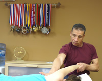

|
About Dr. Farouk ElkassadDr. Farouk Elkassed is well known for:
His approach ...His approach is to look at the body as a whole, not only evaluating the physical, but also the emotional, psychological, and social components of the individual, treating these elements to better achieve the patients’ goals. Each new patient receives one hour of comprehensive evaluation. Every patient receives a full 30 minutes of hands-on treatment for their following visits. Because Dr. Farouk is a solo practitioner, every patient will receive consistent treatment. His experience and credentials ...Dr. Farouk Elkassed has been a clinician since 1986. He completed his Doctorate Degree in Physical Therapy from Virginia Commonwealth University (VCU) in May of 2008. He has been a clinical instructor for over 20 years. He has worked with the Northern Virginia Community College (NVCC) PTA program as well as Marymount Doctorate Program in Physical Therapy. He is a guest lecturer at NVCC Physical Therapy Assistant Program, assisting with teaching the soft tissue mobilization and myofacial release course. |
He understands ...Dr. Farouk is an ultramarathon runner (Any distance beyond a marathon). To this day, he has completed over 100 races from a marathon to 100 miles. He has managed to put many injured runners back on the trail in a matter of a very short time. Dr. Farouk’s dedication, care, and constant striving towards excellence have changed many people’s lives. He can change yours. Contact InfoDr. Farouk Elkassed, Clinical Director (P.T., DPT)
|
Copyright 2009, Access Physical Therapy, LLC